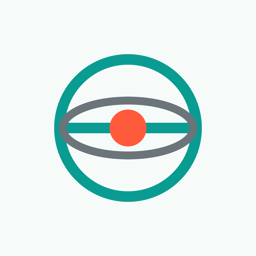

Small apps. One job each.
Each one does a single thing properly and stays out of your way. Built with care by one person.
Questions, ideas, bugs?
Write to me directly.
Each one does a single thing properly and stays out of your way. Built with care by one person.

Write to me directly.